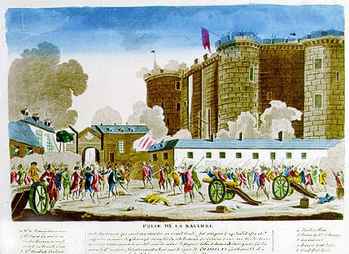

 |
| 13.
Prise de la Bastille [Taking of the Bastille] Caption: Cette forteresse qui avait su résister au Grand Condé, fut attaquée le 14 juillet 1789 et emportée en moins de 4 heures ; le succès fut dû à la bravoure des Citoyens réunis aux Gardes Françaises. Ce fort, commencé en 1368 sous les ordres de Hugues Aubriot, Prévôt de Paris, qui en fut lui même la 1ère victime, fut entièrement achevé sous le règne de Charles VI, vers l'an 1383. Il a existé 520 [ans] et à peine faudra-t-il 6 mois pour son entière démolition. A Paris chez J. Chereau Rue St Jacques près la Fontaine St Séverin n°257. Column on the left (reference to numbers on the image) : 1.Mr de Launay, Gouverneur 2. Mr Harné, Grenadier au Gardes Françaises, natif de Dole en Franche-Comté 3. Mr Humbert, Horloger, natif de Langres Column on the right : 4. Pavillon blanc 5. Maison de Mr de Launay 6. Les Cuisines 7. Premier Pont-levis 8. Grand Pont-levis |